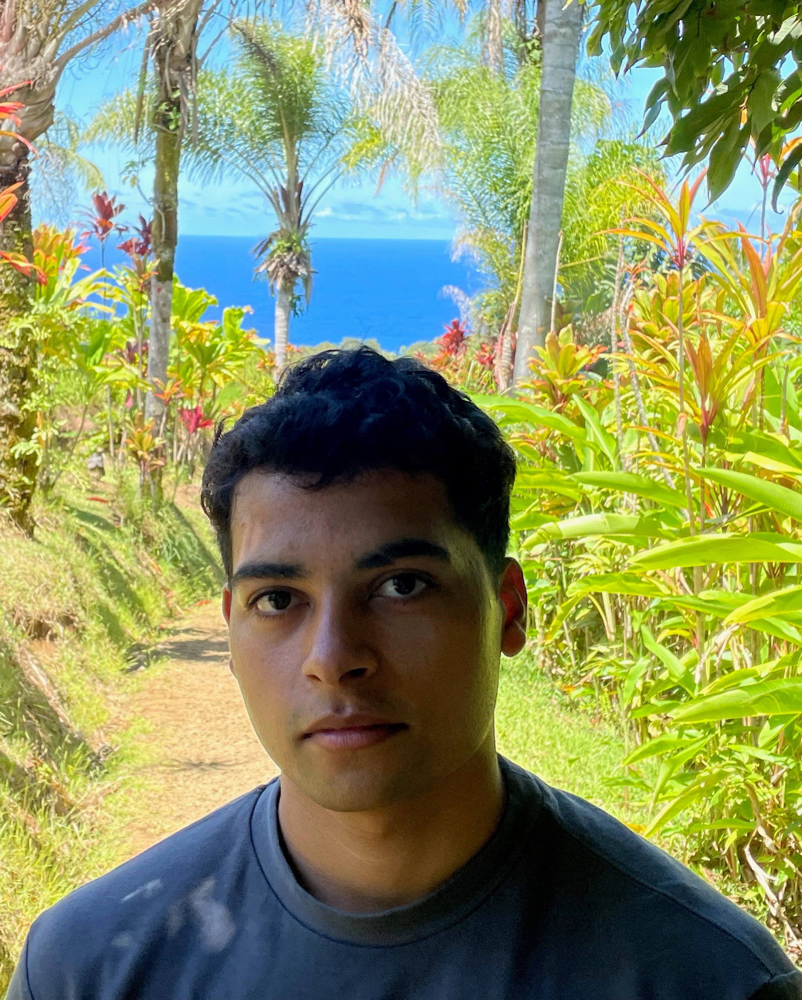

Currently, I work as a software engineer. I graduated from Georgia Tech with a Masters in Computer Science with a focus in Machine/Deep Learning in the fall of 2022. At Georgia Tech, I was a member of the CLAWS
research group where I collaborated with Gaurav Verma and was advised by Professor Srijan Kumar.
At CLAWS, my research contributions revolved around the robustness of multimodal and NLP models/sytems [Paper].
Prior to that, I completed my Bachelors in Computer Science at the University of Virginia. During my undergrad I was a student researcher for Professor Hongning Wang,
where I studied deep learning models based recommendation systems. Specifically, the issues of popularity bias and manners in which one can
evaluate and debias such models [Paper].
Current Research Interests: Multimodal Learning, Efficent LLMs, and RL
I have previously worked among other researchers at LAION on open-source AI projects, hoping to advance the science while allowing its capabilities to be used and impact a larger array of people.
Additionally, when possible I attempt to implement ideas and methods shared in literature to improve my own understanding as well as to potentially help others expand upon the work.
In my free time I enjoy playing sports/video games, reading papers/books, working out, photography, and learning new things.
🌹💐

Recent Work
XMAI at ACL'23
Cross-Modal Attribute Insertions for Assessing the Robustness of Vision-and-Language Learning